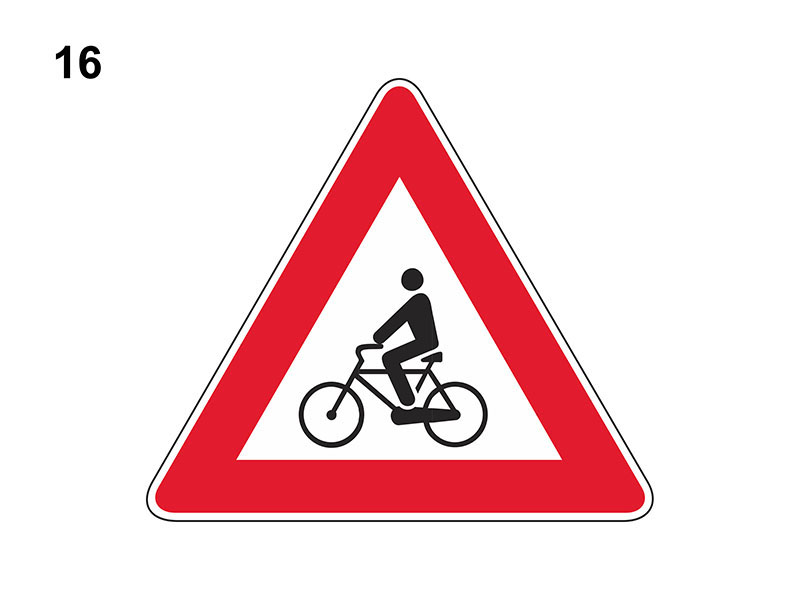

Attraversamento ciclabile

E' un segnale di pericolo che preannuncia (di norma a 150 metri) un attraversamento ciclabile (sia dentro che fuori i centri abitati) quindi un attraversamento per ciclisti, contraddistinto dagli appositi segni sulla carreggiata.
In presenza del segnale:
Non è vero che è posto in corrispondenza di un attraversamento ciclabile, ma come detto 150 metri prima.
In presenza del segnale:
- bisogna moderare la velocità in modo da non costituire pericolo per la sicurezza dei ciclisti ed essere pronti ad arrestarsi, se necessario, per dare la precedenza ai ciclisti che attraversano
- non è consentito sorpassare i veicoli che si sono arrestati per far attraversare la carreggiata ai ciclisti
- non si deve effettuare sosta o fermata in corrispondenza dell'attraversamento
Non è vero che è posto in corrispondenza di un attraversamento ciclabile, ma come detto 150 metri prima.